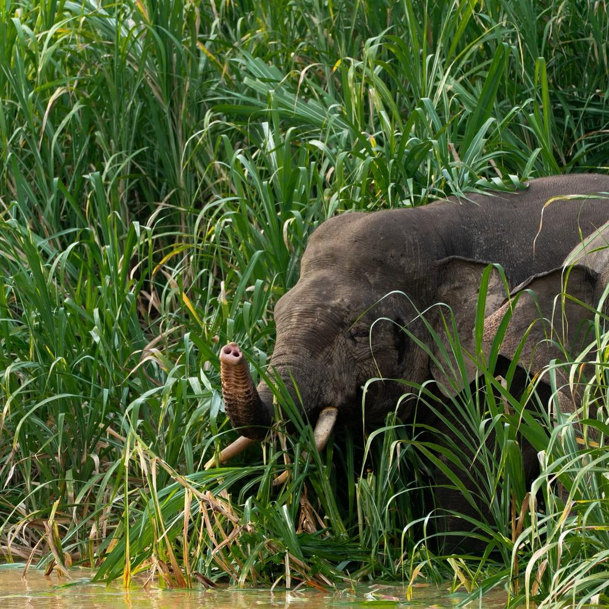

Research program
Persistence has a price
Many wild mammals survive in agricultural and developed landscapes, but surviving is not the same as thriving. My research measures the gap between the two by linking where animals go to what they encounter and how their bodies respond.
01 Movement & space use
Carnivores in fragmented landscapes
In Borneo's Lower Kinabatangan floodplain, a ribbon of protected forest is surrounded by oil palm. I led the first GPS satellite-collaring of a viverrid, tracking Malay and common palm civets to map home ranges, sleeping sites and movement across the forest–plantation boundary. Combined with airborne remote sensing of forest structure, these data showed how civets use degraded habitat and plantation edges.
I've extended this work to larger carnivores, contributing to GPS telemetry and camera-trap studies of Sunda clouded leopards. I'm also part of a global, multi-species analysis showing that mammals recover from capture and tagging faster in human-disturbed landscapes.
- Space-use patterns of Malay civets persisting within a landscape fragmented by oil palm plantations. Landscape Ecology (2021)
- First known satellite collaring of a viverrid species. Ecological Research (2016)
- Mammals show faster recovery from capture and tagging in human-disturbed landscapes. Nature Communications (2024)
- Movement and space use of Sunda clouded leopards in a human-modified Bornean landscape. Animal Biotelemetry (2026)

02 Health & ecotoxicology
What living beside agriculture costs
Telemetry tells us where animals go, not what happens to them there. I developed a non-invasive protocol for monitoring heavy metals and agrochemicals and used civets as indicator carnivores. The work identified the drivers of metal exposure across the landscape and its links to animal health.
Alongside this, I characterised blood profiles of wild Malay civets at the forest–oil palm interface, giving some of the first physiological baselines for wild viverrids. I've also contributed to safe chemical immobilization protocols for free-ranging Sunda clouded leopards, the practical basis for capture-based research on threatened felids.
- The price of persistence: drivers and health implications of metal levels in indicator carnivores. Environmental Research (2022)
- Blood profiles of wild Malay civets at the forest interface of oil palm agriculture. Conservation Physiology (2020)
- Chemical immobilization of free-ranging and captive Sunda clouded leopards. Journal of Veterinary Medical Science (2017)

03 Disease & monitoring
Emerging threats, long-term data
At the Florida Fish and Wildlife Conservation Commission, I work where research meets management. I contributed to the investigation of bald eagle mortality and nest failure caused by clade 2.3.4.4 highly pathogenic H5N1 avian influenza. The disease is now spilling over into wild mammals, and that study has become a widely cited record of its effects on wildlife. I also helped analyse 45 years of statewide bald eagle breeding data to quantify population and demographic trends.
These projects shape how I approach mammalian conservation: long-term monitoring, rapid disease response and close partnership with state and federal agencies.
- Bald eagle mortality and nest failure due to clade 2.3.4.4 HPAI H5N1. Scientific Reports (2023)
- Breeding bald eagle population and demographic trends in Florida, 1972–2017. Journal of Raptor Research (2023)
04 Natural history
Baselines for the overlooked
Conservation planning for small carnivores is held back by how little we know about them. Through systematic camera trapping and surveys I've documented the small carnivore community of the Lower Kinabatangan Wildlife Sanctuary. This work produced a new locality record for the endangered otter civet, the first activity pattern for the Sunda stink-badger and holt-based activity of smooth-coated otters. I also authored the Malay civet account for the Wildlife Atlas of Sabah.
- Small carnivores of the Lower Kinabatangan Wildlife Sanctuary, including a new locality for the otter civet. Small Carnivore Conservation (2016)
- The first recorded activity pattern for the Sunda stink-badger using camera traps. Raffles Bulletin of Zoology (2017)
- Holt-based activity patterns of smooth-coated otter. IUCN/SSC Otter Specialist Group Bulletin (2020)
to come
Toolkit
Methods
- Capture & handlingLive-trapping, chemical immobilization, biological sampling of wild carnivores
- TelemetryGPS and satellite collars, home range and movement analysis
- Camera trappingCommunity surveys, activity patterns, occupancy
- GeospatialHabitat mapping with airborne remote sensing, landscape analysis
- EcotoxicologyNon-invasive heavy metal and agrochemical monitoring
- Physiology & healthHaematology and blood biochemistry, disease surveillance
Collaboration
Partners
- Florida Fish and Wildlife Conservation CommissionFish & Wildlife Research Institute
- Danau Girang Field CentreSabah Wildlife Department & Cardiff University
- Cardiff UniversitySchool of Biosciences
- University of OxfordWildlife Conservation Research Unit (clouded leopard research)